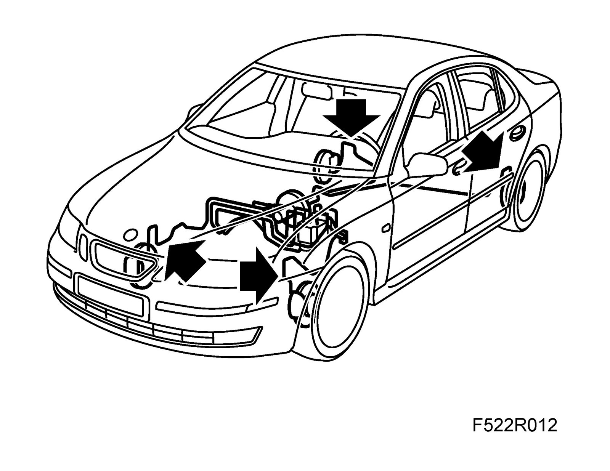

Brake Hose/Line: Service and Repair
Brake hose
To remove
Note
The following procedure applies to changing the brake hose on a front wheel. The same principle can be applied to hoses on the rear wheels as well.
1. Depress the brake pedal slightly using a brake pedal clamp.
Remove fuse 6 from instrument panel electrical centre 22.
2. Raise the car and remove the wheels on the side where the hose is to be changed.
3. Detach the hose from the brake caliper.
4. Remove the connection between the brake pipe and the brake hose.
5. Plug the brake line.
6. Release the clip and remove the hose.
To fit
Warning
When fitting new brake hoses it is very important that they are fitted in the correct position so that they do not come into contact with other parts of the car during suspension and steering movement.
The brake hoses must not be twisted. The front brake hoses should be fitted when the wheels are hanging freely and pointing straight ahead.
1. Fit the new brake hose to the brake pipe.
Tightening torque: 15 Nm (11 lbf ft)
2. Fit the hose and clip onto the bracket.
3. Fit the hose to the brake caliper with new seals. Take care not to twist the hose.
Tightening torque: 40 Nm (30 lbf ft)
4. Remove the brake pedal clamp.
5. Refit fuse 6 into the instrument panel electrical centre 22.
6. Bleed the brake system.
7. Fit the wheel.
8. Check the brake hose connections for leakage.
9. Lower the car.